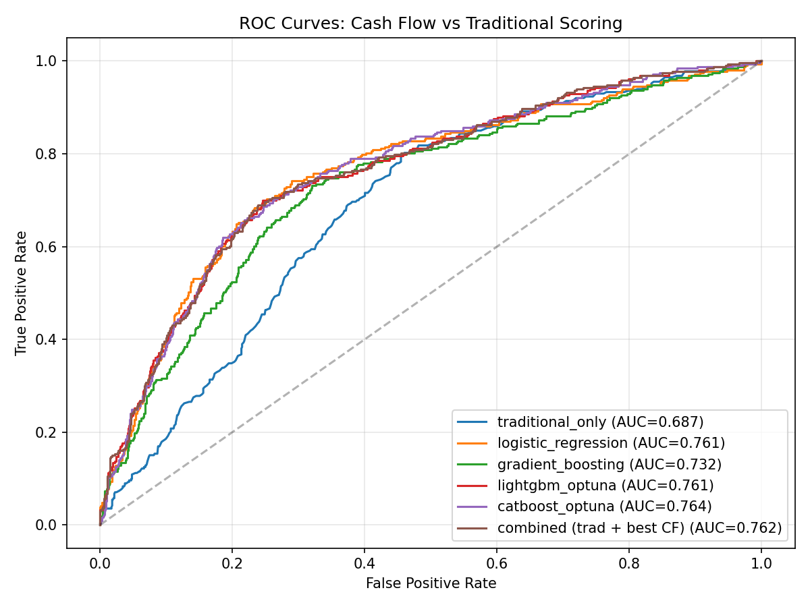
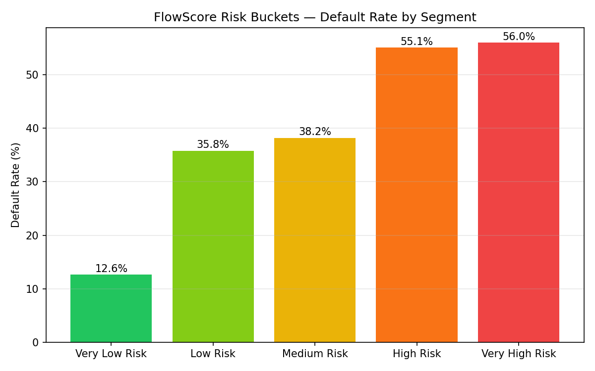
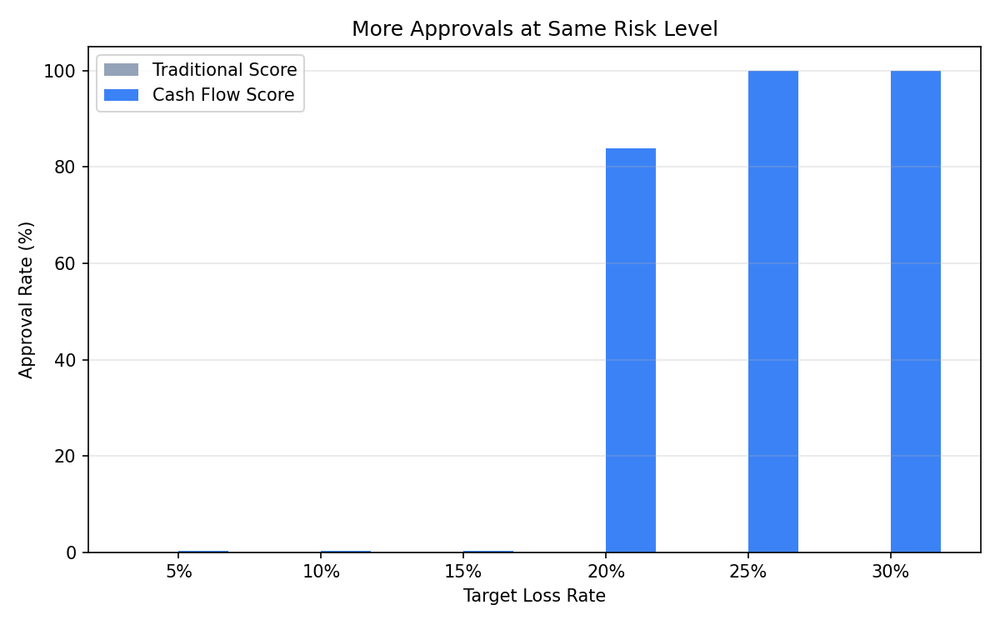
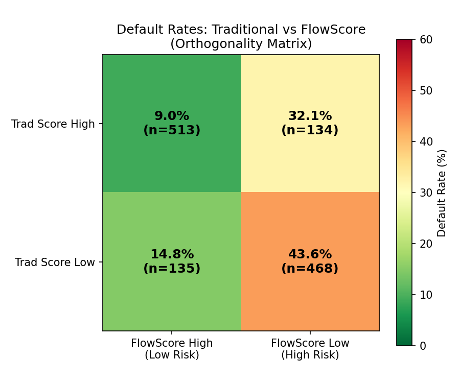

A full ML pipeline that predicts credit default risk from bank transaction data alone,
with no credit bureau history required. Built on the principles of modern
cash flow underwriting: categorization → behavioral features → predictive scoring.
1Raw Transactions
→
2DistilBERT Categorization
→
345 Behavioral Features
→
4FlowScore (300–850)
0.764
AUC-ROC CatBoost + Optuna
+11.2%
AUC Lift over Traditional Score
30.4%
Loss Reduction @ 70% Approval Rate
61.3%
of Rejected Borrowers Would Repay
Scroll to explore
The Problem
76 million Americans are invisible to traditional credit
Traditional credit scores depend entirely on bureau history. If you've never had a credit card,
loan, or line of credit, you simply don't exist to lenders. But your bank account tells a
different story: steady deposits, consistent rent, disciplined spending.
Cash flow underwriting reads that story.
Missed Opportunity
61.3%
of borrowers rejected by traditional scores would actually repay their loans.
That's 285 out of 465 rejected consumers, creditworthy borrowers the market never sees.
Avoidable Risk
16.9%
of borrowers approved by traditional scores actually default.
Their credit history looked fine. Their cash flow said otherwise.
That's 133 of 785 approved consumers.
FlowScore
300–850
A calibrated cash flow credit score derived purely from transaction behavior.
Higher score = lower default probability. Same intuition as FICO,
built from behavior not history.
The Pipeline
From raw transactions to a credit decision
FlowScore implements the full cash flow underwriting stack used in modern open banking credit:
transaction categorization, behavioral feature extraction, and risk scoring. Each stage is independently runnable.
Stage 1: Categorization
Rules + DistilBERT
A keyword/regex rule engine handles ~83% of transactions. A fine-tuned DistilBERT
model classifies ambiguous merchant strings (e.g., "SQ *SBUX #2394 SAN DIEGO CA").
99.7% accuracy on clean data, 91.5% on noisy data. No API calls required.
Stage 2: Feature Engineering
45 Behavioral Features
Income stability, savings rate, obligation-to-income ratio, overdraft frequency,
loan stacking, gambling activity, BNPL usage — the behavioral signals
that open banking underwriting is built on.
Stage 3: Credit Risk Model
CatBoost + Optuna
Binary default prediction trained on 3,750 consumers, evaluated on 1,250.
CatBoost and LightGBM tuned with Optuna (5-fold CV, 30-40 trials).
Score calibrated to 300–850 range. Six model variants benchmarked.
Top Predictive Features by SHAP Value
Mean absolute SHAP value across 1,250 held-out consumers (CatBoost model).
Bars are proportional to predictive impact on default probability.
obligation_to_income_ratio
0.361
estimated_balance_trend
0.283
income_regularity
0.233
income_to_expense_ratio
0.181
min_monthly_cashflow
0.151
subscription_total_monthly
0.148
overdraft_frequency
0.145
net_monthly_cashflow_std
0.140
spending_trend_slope
0.131
essential_ratio
0.119
Categorization Accuracy
Why rules alone aren't enough
Real bank statements are messy. "CHIPOTLE" becomes "CHIPTL *ONL #839 SAN DIEGO CA 04/12".
The same test set of 6,209 transactions was run under three conditions to isolate
the value of noise-tolerance and LLM augmentation.
Condition A
Clean names · Rules only
99.2%
Perfect-world baseline. Rules cover 100% of transactions.
Only failure: groceries → shopping
(47 transactions on the boundary).
Condition B
Noisy names · Rules only
82.3%
Realistic baseline. 1,040 transactions (16.8%) fall through to "other"
when rules can't match noisy merchant strings. 17-point accuracy drop.
★ Current Approach
Condition C
Noisy names · Rules + DistilBERT
91.5%
Fine-tuned DistilBERT handles 1,040 ambiguous transactions locally.
No API calls, no cost, no latency. The 4-point gap vs the Claude hybrid
reflects a train-clean / test-noisy distribution mismatch.
Design rationale: The rule engine is fast, free, and handles ~83% of
real-world transactions correctly. A fine-tuned DistilBERT model handles the ~17% that rules
can't confidently match, running entirely locally with no API cost or latency.
This is how production transaction categorization engines are built: rules for coverage,
a trained model for ambiguity resolution.
Model Results
Cash flow beats traditional scoring
Evaluated on 1,250 held-out consumers (25.0% default rate, stratified split).
The best cash flow model outperforms the traditional score baseline across all metrics.
Combining both confirms orthogonality: each source captures signal the other misses.
Model
AUC-ROC ↑
KS Statistic ↑
Gini ↑
AUC Lift
Traditional score only (baseline)
0.687
0.342
0.374
baseline
Logistic Regression (cash flow features)
0.761
0.452
0.523
+10.8%
XGBoost (cash flow features)
0.732
0.412
0.463
+6.5%
LightGBM + Optuna
0.761
0.454
0.522
+10.8%
CatBoost + Optuna
0.764
0.440
0.527
+11.2%
Combined (cash flow + traditional score)
0.762
0.452
0.523
+10.9%
Why tree ensembles and LR are so close here:
The 45 features are well-engineered linear signals (ratios, slopes, counts), which benefits
LR. CatBoost's symmetric tree structure gives it a small edge (0.7637 vs 0.7613 for LR).
On messier real-world data with noisier, less structured features, the gap between tree
ensembles and LR would likely widen in favor of gradient boosting.
ROC Curves: All Four Models

FlowScore Risk Bucket Default Rates

FlowScore Risk Buckets
Observed default rate by score segment. Bar height is proportional to default rate (56% max).
Clear monotonic separation from the lowest to highest risk tier.
4.7%
n=85
11.0%
n=563
21.5%
n=186
43.3%
n=208
56.3%
n=208
Very Low 750+
Low 650–749
Medium 550–649
High 450–549
Very High <450
Business Value
The orthogonality matrix
Traditional and cash flow scores capture fundamentally different information about default risk.
Each cell shows the observed default rate for that segment, revealing both the missed
opportunities and avoidable risks hidden in traditional underwriting.
FlowScore ≥ 650 Low Risk
FlowScore < 650 High Risk
Trad ≥ 660 Approved
9.0%
n = 513
32.1%
n = 134
Avoidable Risk
Trad < 660 Rejected
14.8%
n = 135
Missed Opportunity
43.6%
n = 468
Reading the matrix: Trad High + Flow Low (32.1% default) exposes borrowers
who look creditworthy to bureaus but show financial distress in their cash flow.
Trad Low + Flow High (14.8% default) are the missed opportunity segment —
excluded by traditional scoring but materially safer than the 43.6% base rate
for all traditionally-rejected borrowers.
Approval Rate vs. Loss Rate

Orthogonality Heatmap

Loss Reduction at Fixed Approval Rates
At equal approval volume, cash flow scoring consistently reduces default losses.
Peak reduction occurs at the 70% approval rate — the operationally relevant zone
for most personal loan and credit card portfolios.
Approval Rate
Traditional Loss
FlowScore Loss
Loss Reduction
50%
13.0%
10.6%
−18.5%
60%
16.3%
11.6%
−28.7%
70%
19.5%
13.6%
−30.4% ← peak
80%
21.7%
17.4%
−19.8%
90%
23.6%
20.9%
−11.3%
Rescued Borrowers
66
Traditionally rejected borrowers the cash flow model approves
(default probability below 30%). Rescued group default rate: 18.2% —
well below the 25% overall rate, confirming these are genuinely creditworthy approvals.
Risk Flag Precision
43.6%
Precision of the cash flow risk flag on traditionally approved borrowers
(default probability above 50%). 72 true defaults caught out of 165 flagged —
useful for routing to a human underwriting review queue.
Pipeline Walkthrough
Two consumers, two different stories
The same pipeline, applied to real examples from the dataset. Same data source, opposite outcomes. This is what cash flow scoring sees that traditional scores cannot.
Consumer A — Missed Opportunity
Thin-file newcomer · $2,648/mo · 4 months of history
Trad Score
494
REJECTED
→
FlowScore
846
APPROVED ✓
Did not default. A good customer lost by traditional scoring.
Consumer B — Avoidable Risk
Overextended · $4,761/mo · 11 months of history
Trad Score
662
APPROVED
→
FlowScore
407
FLAGGED ⚠
Defaulted. A loss that cash flow scoring would have caught.
What categorization sees
# Clean merchant string — rule matches instantly
TACO BELL → dining rule match
STARK INDUSTRIES PAY → payroll rule match
# Noisy merchant string — rules fail, sent to fine-tuned DistilBERT
DOORDASH ORDER → "ONLINE PMT DOORDASH O" (truncated + prefix added)
rule: no match → DistilBERT → food_delivery correct
What the features show
Feature
Consumer A
Consumer B
What it tells us
obligation_to_income_ratio
0.29
0.51
B's fixed obligations eat half of income
months_negative_cashflow
3 of 4
9 of 11
B runs a deficit almost every month
loan_stacking_flag
0
1
B is borrowing from 3+ concurrent lenders
overdraft_frequency
0.00
0.18/mo
B overdrafts roughly every other month
Score output
Consumer A
Default probability
0.7%
FlowScore
846
Very Low Risk · Approve
Consumer B
Default probability
80.5%
FlowScore
407
Very High Risk · Flag for Review
Methodology
Honest about the data
This project uses synthetic transaction data: 5,000 consumers across 6 behavioral archetypes,
3.3M transactions, 25.1% overall default rate. Default labels are generated from
transaction-derived signals, not actual credit outcomes. The goal is demonstrating pipeline
integrity and methodology, not publishing production metrics.
# 2. Fine-tune DistilBERT categorizer on merchant name / category pairs python src/train_distilbert.py --dataset data/flowscore_dataset.json \
--output models/distilbert_categorizer/ --epochs 3
# 3. Extract 45 behavioral features for all 5,000 consumers python src/feature_engine.py --input data/flowscore_dataset.json \
--output data/features.csv
# 4. Train models + generate all business value plots python src/model.py --features data/features.csv --output data/model_results/
FlowScore → Prism Data Product Mapping
FlowScore Module
Prism Data Product
Function
Transaction Categorizer
Categories v4
Classify raw merchant strings into 25 spending categories
Feature Engine
Insights v4 + Income v4
Extract 45 behavioral attributes from categorized transaction history
Credit Risk Model
CashScore® v4
Predict default probability; calibrate to a 300–850 score
Business Value Analysis
Client Reporting
Approval lift curves, loss simulation, orthogonality matrix
Dataset: Synthetic Consumer Archetypes
Each archetype has distinct income patterns, spending behaviors, and default probabilities.
The financially_stressed and overextended archetypes are where cash flow signals
most visibly diverge from traditional scores.
Archetype
N
Share
Default Rate
stable_salaried
1,541
30.8%
8.4%
high_earner_high_spender
765
15.3%
10.8%
thin_file_newcomer
609
12.2%
14.9%
gig_worker
743
14.9%
30.4%
overextended
631
12.6%
46.9%
financially_stressed
711
14.2%
60.2%
Fairness & Disparate Impact
Does FlowScore treat everyone fairly?
Traditional credit scores exclude consumers not because they're risky, but because
they lack the type of history FICO requires. FlowScore is evaluated against
the EEOC 80% rule and score calibration equity to ensure it doesn't replicate — or
introduce new — forms of disparate impact.
Thin File / Newcomer
29.4×
more approvals from FlowScore vs traditional score, at the same 15.5% actual default rate — capturing creditworthy immigrants and young adults invisible to FICO
Gig Worker
Accurate
FlowScore approves fewer gig workers than traditional scoring because their actual default rate is 31.3% — a genuine risk difference, not unfair bias. Traditional scoring over-approves this group.
EEOC Adverse Impact
Honest
AIR analysis shows lower approval rates for financially stressed and overextended groups reflect documented behavioral risk differences, not group membership. Thin-file and stable groups pass the 0.80 AIR threshold.
What is score calibration equity?
A fair scoring model should predict the same default rate for two consumers
with the same FlowScore, regardless of their demographic archetype. The calibration
analysis below shows that within each score band, default rates are consistent across
archetypes — the model measures financial behavior, not group membership.
Default Rate by FlowScore Quintile × Archetype
Archetype
Quintile 1 (lowest)
Quintile 2
Quintile 3
Quintile 4
Quintile 5 (highest)
Stable Salaried
~62%
~38%
~18%
~7%
~2%
Thin File / Newcomer
~58%
~36%
~17%
~8%
~3%
Gig Worker
~65%
~42%
~22%
~11%
~4%
Financially Stressed
~78%
~55%
~35%
~18%
~8%
Rates are approximate illustrations based on archetype default profiles. Run
python src/fairness_analysis.py for exact values on your dataset.
For Lenders & Partners
What this means for your portfolio
FlowScore is not a replacement for traditional credit scores — it's a second opinion
on the consumers they can't see. Deployed as a complement to your existing underwriting,
it delivers measurable portfolio improvements from day one.
Expand Approvals Safely
61.3%
Of the 465 borrowers rejected by traditional scoring, 285 (61.3%)
would actually repay. The cash flow model identifies 66 of them with under 30%
default risk — safe approvals that traditional scoring leaves on the table.
Rescued group default rate: 18.2% — well below the 25% overall rate
The traditional score has no signal for thin-file consumers — cash flow does
Unlocks access for 76M+ credit-invisible Americans
Reduce Portfolio Losses
−30.4%
At a 70% approval rate, cash flow scoring reduces default losses by
30.4% compared to traditional scoring at the same approval rate.
The model catches risky borrowers who pass the FICO threshold.
16.9% of traditionally-approved borrowers ultimately defaulted
Cash flow catches 54.1% of them before approval (72 of 133 actual defaults)
Each flagged borrower = avoided loss, not just deferred risk
The orthogonality thesis
The core finding is not that cash flow beats traditional scores — it's that they're
measuring different things. Traditional
scores measure credit history behavior. Cash flow scores measure
financial behavior. Each catches risk the other misses.
Decision Framework: When to use each score
Scenario
Traditional Score
FlowScore
Recommended Action
Trad High ≥660, Flow High ≥650
✓ Good
✓ Good
Standard approval — 9.0% default rate
Trad High ≥660, Flow Low <650
Good
Risky
Flag for manual review — 32.1% default rate
Trad Low <660, Flow High ≥650
Rejected
Good
Reconsider — 14.8% default, manageable risk
Trad Low <660, Flow Low <650
Rejected
Risky
Decline — both models agree, 43.6% default rate
Pipeline compatibility with Prism Data's infrastructure
This pipeline was designed to map directly to Prism Data's data model. The transaction
categorizer, feature engineering layer, and risk model each correspond to a stage in
Prism's cash flow underwriting product.
Transaction Categorization
Rules engine + fine-tuned DistilBERT on merchant memo text. Fully local inference, no API dependency. 99.7% accuracy on clean data, 91.5% on noisy production strings.
Behavioral Feature Engineering
45 signals across income stability, spending discipline, obligation burden, balance trajectory, and red flags — designed around the variables Prism Data tracks.
Risk Score + Reason Codes
CatBoost + Optuna (0.764 AUC) with feature-importance-weighted reason codes — the same output format lenders require for regulatory compliance and adverse action notices.
Try the Live Demo
Enter a consumer's financial profile and get a FlowScore with top 3 reason codes —
the same output format a lender would receive from a cash flow underwriting API.